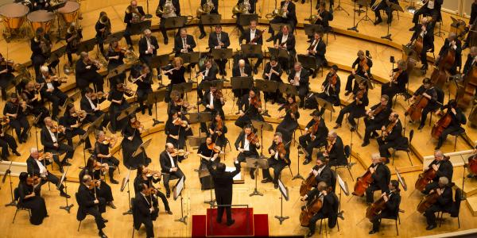
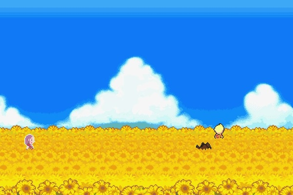

Music education has been a formative part of many students' educational experiences in the United States. Most public
schools have vocal and instrumental music programs starting as early as kindergarten and lasting all the way to senior
year of high school. While it isn't required the full time, many students still opt to take these classes all the way
into graduation. Despite this, most of these classes rarely cover musical styles or instrumentations outside of the
classical Eastern European canon. This is poor education for many reasons.

There are a multitude of musical styles and cultures completely ignored by the current music education system. Even
within the American canon, students rarely learn American styles of music, such as jazz improvisation. In my own
experience within the public musical education system, I learned very little about jazz, improvisation, or anything that
didn't focus on musical styles of Europeans of the past few centuries. While the issue is clear, I think solving it is
even easier. The majority of future musical educators learn from a university setting. This leads directly into the problem of
diversity in musical styles taught. By teaching college students about different musical styles when preparing to
educate, more public music education programs will emphasize other styles and cultures. This will hopefully lead to more
types of creative expression among these studens and more art in general.
Video Games as Art and the Value of Self Expression
By Thomas Manning
Video games are often seen as an incredibly shallow medium for telling stories and entertaining in general. This
mostly comes from the technical limitations when video games were first introduced. Most early games needed to
prioritize the gameplay experience as that was the only selling point of games at their inception. However, this
has changed over the course of time, as games place a heavier emphasis on aesthetic, environmental design, and
narrative.
Video games have been implementing stories for decades, but it wasn't until the late 90s and early 2000s that
this became an important aspect to video games. Especially in Role Playing Games, this has become a selling
point to many audiences as outdated gameplay styles are phased out. A clear example of this is seen in Shigesato
Itoi's final game, Mother 3. While it employs the video game medium to deliver a fun experience, the reason it
is considered one of the greatest games of all time is due to the tragic narrative and the environment created
for this game. Itoi's games have always been used as a form of self expression, connecting his own experiences
to his game's narratives.

Similarly self expression was a key part of creating my personal favorite game,
Celeste. Developer Maddy Thorson helped use the story of Celeste to deal with their own anxiety and eventually
to come to terms with their gender identity. This game is a clear example of video games as a transformative art
form, impacting the creators and audiences in the same way a film or musical album might.